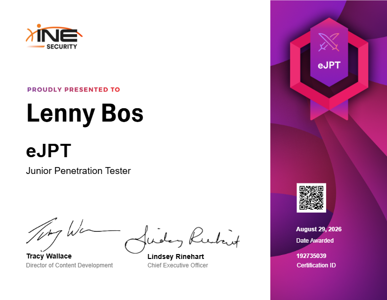

Package Delivery Driver · DHL
Delivered packages and organized deliveries.
I build hands-on security labs to understand how attacks happen and how defenders can find them. My work covers Active Directory, Wazuh, Cowrie and Python. I study Cyber Security at the Amsterdam University of Applied Sciences, with a background in Software Development.
View ResumeDelivered packages and organized deliveries.
Developed and maintained websites, adapting applications to client needs.
Performed inspections and sorted packages.
Grey-box Windows privilege-escalation assessment, with findings translated into risks, priorities and practical remediation advice.
School project in a controlled lab; all organisations and systems are fictional or lab-based.
View portfolio report ↗Python-based remote administration proof of concept controlled through a Discord bot, built to study command-and-control behaviour and its defensive implications.
Source code and downloads are intentionally unpublished.
Controlled demonstrations of network attack techniques, their impact and how to detect or mitigate them.
Wazuh · Wireshark · Nmap · Burp Suite · Kali Linux · Hack The Box · TryHackMe
Windows · Linux · PowerShell · VirtualBox · Python · Git · JavaScript · React · WordPress
Cisco · 2026
INE · August 2026

Collected through a public SSH honeypot in just over two weeks, then explored in Wazuh.
Software Development foundations and hands-on Cyber Security study.
Expanding the lab with additional threat-intelligence integrations and detection capabilities.
Amsterdam University of Applied Sciences
ROC Mondriaan
I am a 20-year-old Cyber Security student based in The Hague, Netherlands. I learn by building controlled environments where I can investigate Windows security, identity, network attacks, privilege escalation and defensive monitoring. Outside my studies, I take part in various sports and keep developing my practical security skills.
I am looking for a Cyber Security graduation internship starting in February 2027, especially in SOC, incident response, detection engineering or security engineering.